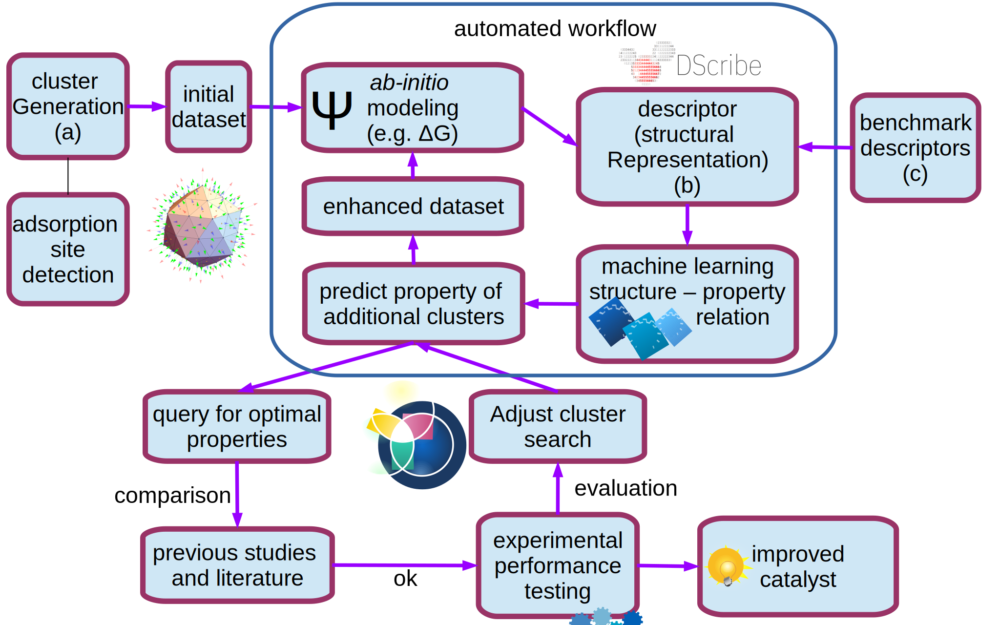

Welcome to Critcatworks¶
Workflow manager for DFT simulations on nanocluster databases using Fireworks
This site is UNDER CONSTRUCTION
The project aims to partially automate nanocatalyst discovery. During the course of this project, critcatworks emerged. It has made screening of catalyst search space and management and analysis of large datasets easier. The following sketch shows an overview of the envisioned and partly realized catalyst discovery platform.
{kind=link}
The package features various workflows:
singlesites workflow
automatically generate adsorbates on nanoclusters
rank the cluster-adsorbate structures based on similarity
run CP2K calculations
do machine learning on the fly
nanocluster workflow
relax nanocluster structures
sort them with respect to stability
coverage workflow
automatically cover nanoclusters with adsorbates
reduce the coverage with a simple heuristic step by step with DFT
coverage ladder workflow
starting from a coverage with adsorbates
sophisticated coverage ladder algorithm searches for the optimal adsorbate coverage
Take a look at the Installation and Quickstart tutorials for the first steps.
Tutorials¶
In order to use the workflow package confidently, it is advised to become familiar with Fireworks: Documentation.
Contributing¶
Contribute by raising an issue on github if you encounter a problem, or develop your own nanocluster workflow. Follow the guidelines in the developer tutorial: For Future Developers
Code Documentation¶
- critcatworks
- critcatworks package
- Subpackages
- critcatworks.database package
- critcatworks.dft package
- critcatworks.ml package
- critcatworks.structure package
- critcatworks.workflows package
- Submodules
- critcatworks.workflows.clusgen module
- critcatworks.workflows.coverage module
- critcatworks.workflows.coverageladder module
- critcatworks.workflows.molsinglesites module
- critcatworks.workflows.nanoclusters module
- critcatworks.workflows.simpleflow module
- critcatworks.workflows.singlesites module
- critcatworks.workflows.uniquemolsites module
- Module contents
- Module contents
- Subpackages
- critcatworks package
About¶
Authors¶
This package is developed at Aalto University, Department of Applied Physics by the Surfaces and Interfaces at the Nanoscale (SIN) group.
Contact¶
If you encounter issues with the software, or want to suggest improvements, please use the issues feature of github.
If you want to contact the authors on other matters, use the following email: marc.jager [at] aalto [dot] fi
License¶
The software is licensed under the GNU General Public License Version 3.0
Funding¶
This project has received funding from the Finnish Foundation for Technology Promotion and the European Union’s Horizon 2020 research under grant agreement number no. 686053 CRITCAT.